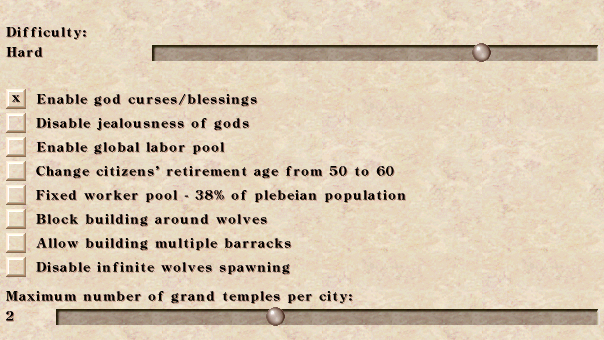

Reset Defaults
Warning: this buttons restores default settings on all tabs! (except Hotkeys, these have their own Reset defaults button). Some settings are however unaffected – these are noted below.
General Settings
Language, Game Speed, Video and Audio options. None of these have any effect on game difficulty.
The following options are not affected by Reset defaults button: Language, Game Speed, Fullscreen, Windowed resolution, Music, Speech, Sound effects, City sounds.
70% is default game speed – this value is used when a game is loaded.
User Interface
These options provide convenience, with no effect on difficulty. Recommended to turn on (besides defaults):
- Show range of Fountains and Wells when buiding Houses
- Show range when building Markets
- Enable military sidebar – with selected legion, all military commands are on sidebar, eliminating the need to right click the legion for issuing commands
- Display max attainable Prosperity – consult Ratings advisor to see max attainable Prosperity rating based on current housing
- Inverse dragging map with RMB – it is more natural to drag the land
- Show partial grid around construction – easier building placement
- Preview paths travelled by roaming walkers – this is incredible! – you can see the travelled path before placing the building
- Draw cloud shadows – surely your today's PC can draw that
Scroll speed is not affected by Reset defaults; 70% is the default value.
Difficulty
- Difficulty is not affected by Reset defaults, however, Hard is considered default difficulty, as it was the original setting. See Other for difficulty effects.
- Enable god curses/blessings – This is the only Difficulty settting which is on by default; also it is not affected by Reset defaults button. It is about neutral regarding difficulty,
as it could do both good and evil. This setting is retained from original Caesar.
- Disable jealousness of gods – Makes the game easier.
- Enable global labor pool – Makes the game easier, by removing the need to have labor-seeking citizens pass by housing.
- Change citizens retirement's age from 50 to 60 – Makes the game easier by increasing the worker pool. However, unemployment might become greater issue, but quite easily solved by placing Academies and Hospitals.
Has no effect with Fixed worker pool.
- Fixed worker pool – 38% of plebeian population – Makes the game easier. Age of the population no longer matters, as 38% of plebeians are always available for work.
- Block building around wolves – Makes the game slightly harder by dissallowing walling off wolves early game with Aqueducts. Recommended to set this ON.
- Allow multiple Barracks – Makes the game significantly easier militarily, especially early game. Also means that Grand Temple for Mars has reduced effects, as it acts as second Barracks.
- Disable infinite wolves spawning – Makes the game easier.
- Maximum number of Grand Temples per city – Default is 2.
Recommended to turn on (besides default God curses/blessings): Global labor pool, Block building around wolves.

City Management
- Buying market ladies don't distribute goods – By default, market buyers also sell goods. Recommended to turn this on to prevent this. About neutral regarding game difficulty.
- Cart pushers from getting Granaries can go offroad – Makes the game easier.
- Double the capacity of cart pushers from getting Granaries – Makes the game easier.
- Allow traders to export food from Granaries – Makes it easier to export food, but could lead to starvation. Recommend to leave this OFF.
- Tower sentries don't need road access from Barracks – Makes the game slightly easier by removing the need to have road connection between Barracks and Towers.
- Farms and Wharves deliver only to nearby Granaries – Improves efficiency, but might mean the load isn't delivered at all. About neutral regarding game difficulty.
- Food isn't delivered to getting Granaries – Neutral, depends on user preference.
- All houses merge – Makes the game slightly easier but less random and better looking.
- Randomly collapsing Clay Pits and Iron Mines take some money instead – This is ok to turn on since the events provide nothing game-wise except several clicks. Should be neutral regarding difficulty.
- Warehouses and Granaries don't accept anything when build – Neutral, purely convenience setting.
- Houses don't expand into Gardens – Neutral.
- Roaming walkers don't skip corners – Neutral, means walkers will also service building which only touch the road by corner - also means their route will be shorter.
- Citizens will automatically kill harmless animals – Neutral, you may leave this off for immersion since sheeps and zebras no longer block construction.
- Non-military gates default to allowing all walkers – Neutral, convenience setting.
Recommended to turn on: Buying market ladies don't distribute goods, Farms and Wharves deliver only to nearby Granaries, All houses merge, Randomly collapsing Clay Pits and Iron Mines, Non-military gates default to allowing all walkers.
Hotkeys
Clone, Mothball, Show Special Orders (J), Clear land (X), Housing, Road, PlaZa, Gardens, PrefecTure, Engineers' post, Doctor, Barber, GranarY, Warehouse, Market (Vendor), WAll, GatehouSe, ReservoIr, AQueduct, Fountain, RoadblocK, Wheat farm (Nutrition), Undo.
Relative Overlay, Water, Fire, Damage, CRime, PrOblems, Food Stocks (Granary), ENtertainment, Education, School, Library, Academy, Barber, Baths (tUbe), ClInic, Hospital, SicKness, TaX income, Desirability (Plazas), Sentiment (Questioning citizens), Mothballed, Religion (praY), Roads (Travel), Levies (the last overlay: Z).